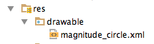
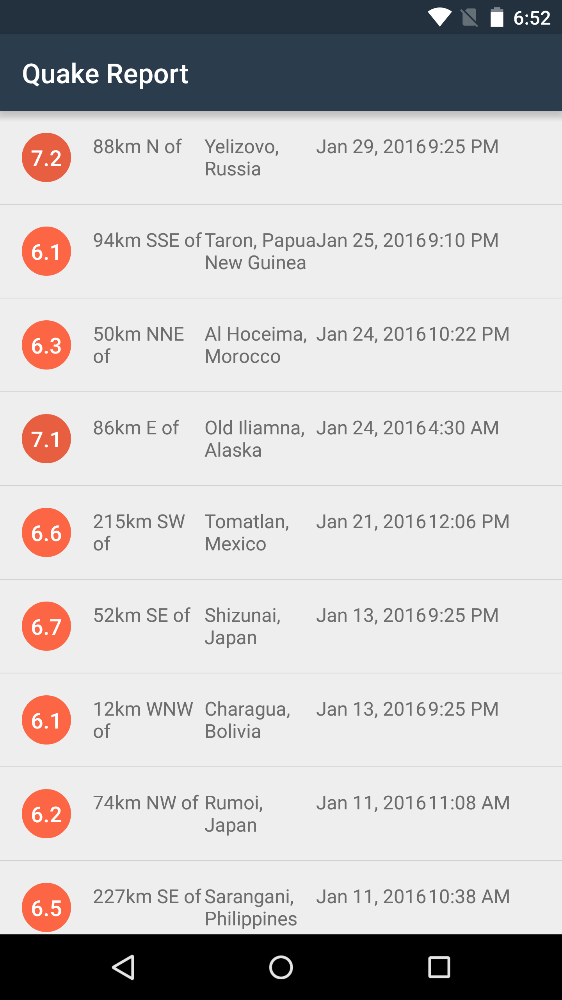

24. Circle Background for Magnitude
Circle Background for Magnitude
Now you’ll have a chance to apply what you learned about switch statements to the Quake Report app! Let me provide some context first and walk you through setting your app for the next coding task.
In the final designs, you’ll notice that there’s a colored circle behind the magnitude value in each list item.

Our designer provided us this guide on what color the circle should be. The colors range from blue (low magnitude value) to red (high magnitude value). Anything above a magnitude 10 earthquake uses the darkest red color (#C03823). Anything between a magnitude 9 and 10 earthquake uses a slightly lighter red color (#D93218), anything between a magnitude 8 and 9 earthquake uses an even lighter red color (#E13A20), and so on. Each level has a different color. Anything below a 2.0 earthquake uses a blue color (#4A7BA7). The specific hex values are provided below.
Setup Your App for the Quiz
Add these colors to your res/values/colors.xml file. You will need to refer to these color resource IDs later in the EarthquakeAdapter when setting up the list item layouts.
<!-- Color for an earthquake with magnitude 0 and 2 -->
<color name="magnitude1">#4A7BA7</color>
<!-- Magnitude circle color for an earthquake with magnitude between 2 and 3 -->
<color name="magnitude2">#04B4B3</color>
<!-- Magnitude circle color for an earthquake with magnitude between 3 and 4 -->
<color name="magnitude3">#10CAC9</color>
<!-- Magnitude circle color for an earthquake with magnitude between 4 and 5 -->
<color name="magnitude4">#F5A623</color>
<!-- Magnitude circle color for an earthquake with magnitude between 5 and 6 -->
<color name="magnitude5">#FF7D50</color>
<!-- Magnitude circle color for an earthquake with magnitude between 6 and 7 -->
<color name="magnitude6">#FC6644</color>
<!-- Magnitude circle color for an earthquake with magnitude between 7 and 8 -->
<color name="magnitude7">#E75F40</color>
<!-- Magnitude circle color for an earthquake with magnitude between 8 and 9 -->
<color name="magnitude8">#E13A20</color>
<!-- Magnitude circle color for an earthquake with magnitude between 9 and 10 -->
<color name="magnitude9">#D93218</color>
<!-- Magnitude circle color for an earthquake with magnitude over 10 -->
<color name="magnitude10plus">#C03823</color>Define a new drawable for the colored circle. Within the project directory pane of Android Studio, right click on the res/drawable folder to add a new drawable resource XML file. Name the file “magnitude_circle”.
Afterwards, in the project directory pane, you should see the magnitude_circle.xml file appear.

Replace the contents of the res/drawable/magnitude_circle.xml file with the below XML.
In magnitude_circle.xml:
<?xml version="1.0" encoding="utf-8"?>
<!-- Background circle for the magnitude value -->
<shape xmlns:android="http://schemas.android.com/apk/res/android"
android:shape="oval">
<solid android:color="@color/magnitude1" />
<size
android:width="36dp"
android:height="36dp" />
<corners android:radius="18dp" />
</shape>By defining the circle shape in XML, we create a single flexible asset that will scale across devices instead of including multiple image assets from our designer. We can also manipulate the color from Java code, further reducing the number of required assets. Fewer image files in our project means the size of our app will be smaller, which is better for the end user!
Diving deep into the topic of shape drawables is out of scope for this course, but you can see this documentation link or this Codepath tutorial for more information.
Now modify the list item layout so that the background attribute of the magnitude TextView refers to the new drawable resource we just defined (android:background="@drawable/magnitude_circle"). There are also other tweaks to the TextView appearance, such as font size and color, so that it matches the design mocks.
In earthquake_list_item.xml:
…
<TextView
android:id="@+id/magnitude"
android:layout_width="36dp"
android:layout_height="36dp"
android:layout_gravity="center_vertical"
android:background="@drawable/magnitude_circle"
android:fontFamily="sans-serif-medium"
android:gravity="center"
android:textColor="@android:color/white"
android:textSize="16sp"
tools:text="8.9" />
… Optionally, you can add 16dp of left margin on the location offset TextView, so that there is some whitespace between the location TextView and the magnitude TextView.
In earthquake_list_item.xml:
…
<TextView
android:id="@+id/location_offset"
android:layout_marginLeft="16dp"
android:layout_width="0dp"
android:layout_height="wrap_content"
android:layout_weight="1"
tools:text="30km S of" />
… Finally, you need to modify the EarthquakeAdapter so that the correct color gets set on the background circle for each list item. This code snippet assumes that magnitudeView is a reference to the R.id.magnitude TextView in the list item layout. You will also need to import the GradientDrawable class.
In EarthquakeAdapter.java:
import android.graphics.drawable.GradientDrawable;In EarthquakeAdapter getView():
…
// Set the proper background color on the magnitude circle.
// Fetch the background from the TextView, which is a GradientDrawable.
GradientDrawable magnitudeCircle = (GradientDrawable) magnitudeView.getBackground();
// Get the appropriate background color based on the current earthquake magnitude
int magnitudeColor = getMagnitudeColor(currentEarthquake.getMagnitude());
// Set the color on the magnitude circle
magnitudeCircle.setColor(magnitudeColor);
…If you add the above code to your app, you’ll see an error in Android Studio mentioning that it doesn’t recognize the method getMagnitudeColor() because it will be your job to define this method!
Your Turn
Finish implementing this design change by defining a private helper method called getMagnitudeColor(double magnitude) that returns the correct color value based on the current earthquake’s magnitude value. Use this opportunity to practice writing a switch statement in the helper method.

Note on color values: In Java code, you can refer to the colors that you defined in the colors.xml file using the color resource ID such as R.color.magnitude1, R.color.magnitude2. You still need to convert the color resource ID into a color integer value though. Example:
int magnitude1Color = ContextCompat.getColor(getContext(), R.color.magnitude1);Note on testing: Once you think your code is working, you can test it by modifying the sample JSON response in the QueryUtils class. Change the QueryUtils SAMPLE_JSON_RESPONSE constant value so that the earthquakes temporarily have different magnitude values from 0 to over 10. Use the example SAMPLE_JSON_RESPONSE code snippet. When you run the app on your device, you should see the full range of magnitude color values.

Circle Background for Magnitude
SOLUTION:
- Follow the steps provided in the quiz instructions (defining new colors, modifying the list item layout, adding a shape drawable).
- In the EarthquakeAdapter, define this new helper method. Use a switch statement to find the appropriate color resource based on the magnitude value.
Circle Background for Magnitude - Solution
In this quiz, we asked you to define the getMagnitudeColor() helper method in the EarthquakeAdapter class. We also encouraged you to use a switch statement. This is one way you could have implemented the method. Remember to add break statements in between each case, if you intend to exit at the end of each case!
In EarthquakeAdapter.java:
…
import android.support.v4.content.ContextCompat;
…
private int getMagnitudeColor(double magnitude) {
int magnitudeColorResourceId;
int magnitudeFloor = (int) Math.floor(magnitude);
switch (magnitudeFloor) {
case 0:
case 1:
magnitudeColorResourceId = R.color.magnitude1;
break;
case 2:
magnitudeColorResourceId = R.color.magnitude2;
break;
case 3:
magnitudeColorResourceId = R.color.magnitude3;
break;
case 4:
magnitudeColorResourceId = R.color.magnitude4;
break;
case 5:
magnitudeColorResourceId = R.color.magnitude5;
break;
case 6:
magnitudeColorResourceId = R.color.magnitude6;
break;
case 7:
magnitudeColorResourceId = R.color.magnitude7;
break;
case 8:
magnitudeColorResourceId = R.color.magnitude8;
break;
case 9:
magnitudeColorResourceId = R.color.magnitude9;
break;
default:
magnitudeColorResourceId = R.color.magnitude10plus;
break;
}
return ContextCompat.getColor(getContext(), magnitudeColorResourceId);
}We provided you with the method signature, so that the method would take a double magnitude value as input and return a color integer value. According to the documentation, the switch statement cannot accept a double value, so we should convert our decimal magnitude value into an integer. Also, the precision of the decimal doesn’t matter at this point because we just need to know if the magnitude falls into 1 of 10 possible buckets.
We can use the Math class to do some handy mathematical calculations. In this case, we can take the “floor” of the decimal magnitude value. This means finding the closest integer less than the decimal value. The floor of the value 1.2 would be the integer 1. Informally, for a positive decimal number, you can think of it as truncating the part of the number after the decimal point.
int magnitudeFloor = (int) Math.floor(magnitude);Once we have the magnitude in an integer form (stored in the magnitudeFloor variable), we can write a switch statement that performs different logic based on the magnitudeFloor value.
switch (magnitudeFloor) {
...
}Within each case, we set the value of the magnitudeColorResourceId variable to be one of the color resources that we defined the colors.xml file. For case 0 and 1, we fall through to the same logic, which is to use the R.color.magnitude1 color. This was a design decision to use the same color for earthquakes with magnitude less than 2. We also have a default case where any earthquake with magnitude higher than 10 will use the R.color.magnitude10plus color resource.
Once we find the right color resource ID, we still have one more step to convert it into an actual color value. Remember that color resource IDs just point to the resource we defined, but not the value of the color. For example, R.layout.earthquake_list_item is a reference to tell us where the layout is located. It’s just a number, not the full XML layout.
You can call ContextCompat getColor() to convert the color resource ID into an actual integer color value, and return the result as the return value of the getMagnitudeColor() helper method.
ContextCompat.getColor(getContext(), magnitudeColorResourceId);Earlier in the EarthquakeAdapter getView() code that we provided you, we set the color value onto the GraidentDrawable which is set on the background of the magnitude TextView. And there you go! The proper color is automatically set on the magnitude circle in the UI!
The full code difference is located here.